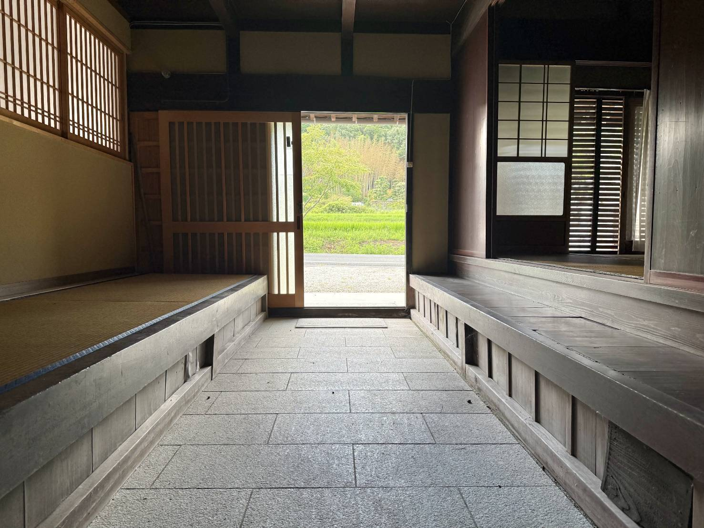

とうじょうRMOへのご意見・ご質問・ご相談は以下のフォームまたは連絡先へお願いいたします。
お問合せフォーム
フォームが表示されない場合は、 こちら（別ウィンドウで開く） からご入力ください。
連絡先
団体名とうじょうRMO
所在地〒673-1323 兵庫県加東市岡本247−4
E-mailokamotokouminkan3687@outlook.jp

とうじょうRMOへのご意見・ご質問・ご相談は以下のフォームまたは連絡先へお願いいたします。
フォームが表示されない場合は、 こちら（別ウィンドウで開く） からご入力ください。